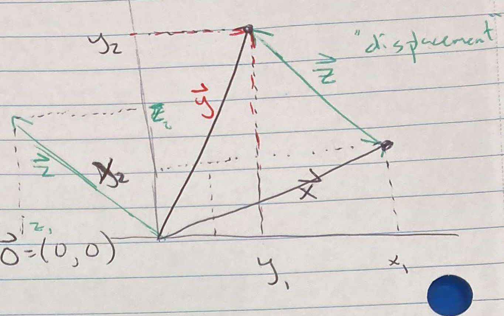
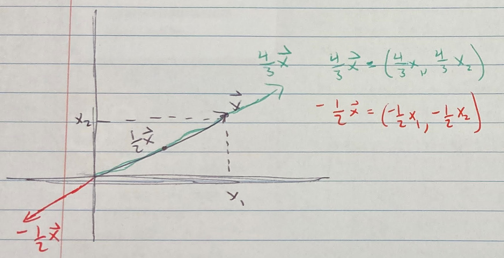

9 Vector Spaces
9.0.0.1 Class 7 - 2023-08-22
Vectors in \(\mathbb{R}^n: \vec{x} = (x_1, ..., x_n) \in \mathbb{R}^n\)
Vector addition:

Scaling a vector:

9.0.0.2 Key operations
Fix \(\vec{x}, \vec{y} \in \mathbb{R}^n, \lambda \in \mathbb{R}\).
- vector addition: \(\vec{x}+\vec{y} = (x_1+y_1, ..., x_n + y_n)\)
- scalar multiplication: \(\lambda \vec{x} = (\lambda x_1, ..., \lambda x_n)\)
- inner product: \(\vec{x} \cdot \vec{y} = \sum_{i=1}^n x_i y_i\)
9.0.1 Prop 1 “vector algebra”
Fix \(\vec{x},\vec{y} \in \mathbb{R}^n\) and \(\lambda \in \mathbb{R}\)
- \(\vec{x} \cdot \vec{x} \geq 0\)
- \(\vec{x} \cdot \vec{x} = 0 \iff \vec{x} = \vec{0}\)
- \(\vec{x} \cdot \vec{y} = \vec{y} \cdot \vec{x}\)
- \(\vec{x} \cdot (\vec{y} + \vec{z}) = \vec{x} \cdot \vec{y} + \vec{x} \cdot \vec{z}\)
- \((\lambda \vec{x}) \cdot \vec{y} = \lambda (\vec{x} \cdot \vec{y})\)
- \((\vec{x} + \vec{y}) (\vec{x} + \vec{y}) = \vec{x} \cdot \vec{x} + 2\vec{x} \cdot \vec{y} + \vec{y} \cdot \vec{y}\)
9.0.2 Proposition 2 “norm rules”
Fix \(\vec{x},\vec{y} \in \mathbb{R}^n\) and \(\lambda \in \mathbb{R}\)
- \(||\vec{x}|| \geq 0\) with \(||\vec{x}|| = 0 \iff \vec{x} = \vec{0}\)
- \(||\lambda \vec{x}|| = |\lambda| ||\vec{x}||\)
- \(||\vec{x} + \vec{y}|| \leq ||\vec{x}|| + ||\vec{y}||\)
Recall trig:
\[c^2 = a^2 + b^c - 2ab\cos(\theta)\]
Rewrite as
\[||\vec{y}-\vec{x}|| = ||\vec{y}||^2 + ||\vec{x}||^2 - 2||\vec{y}|| ||\vec{x}|| \cos(\theta)\]
LHS simplifies to:
\[||\vec{y}-\vec{x}|| = \sqrt{(\vec{y}-\vec{x})(\vec{y}-\vec{x})}^2 = \vec{y} \cdot \vec{y} + \vec{x} \cdot \vec{x} - 2 \vec{y}\vec{x} = ||\vec{y}|| + ||\vec{x}|| - 2 \vec{y}\vec{x}\]
Comparing, we see that \(\cos(\theta) = \frac{\vec{x} \cdot \vec{y}}{||\vec{x}|| ||\vec{y}||}\)
9.0.3 Def “orthogonal”
- say \(\vec{x}, \vec{y} \in \mathbb{R}^n\) are orthogonal if \(\vec{x} \cdot \vec{y}=0\)
- say a nonempty set \(X \subseteq \mathbb{R}^n\) is orthogonal if for each \(\vec{x}, \vec{u} \in \mathbb{R}^n, \vec{x} \cdot \vec{y} = 0\).
- say \(\vec{x}\) and a nonempty \(X \subseteq \mathbb{R}^n\) are orthogonal if \(\vec{x}\) is orthogonal to each \(\vec{y} \in X\).
Example 2 Fix \(X \subseteq \mathbb{R}^n\). \(\vec{0}\) and \(X\) are orthogonal.
9.0.4 Def “orthonormal”
Say \(\vec{x}, \vec{y} \in \mathbb{R}^n\) are orthonormal if
- \(\vec{x}, \vec{y}\) are orthogonal
- \(||\vec{x}|| = ||\vec{y}|| = 1\)
Example 3 Fix \(\vec{x}=(1,0), \vec{x} = (0,2)\). Then \(\vec{x} \cdot \vec{y} = 0\), but \(||\vec{y}|| \neq 1\). So these are orthogonal, but not orthonormal.
9.0.5 Def “linear combination”
Fix a finite set of vectors \(X = \{\vec{x_1}, ..., \vec{x_k}\} \subseteq \mathbb{R}^n\).
Call \(\vec{x}\) a linear combination of \(X\) if there exists \(\lambda_1, ..., \lambda_k\) such that \(\vec{x} = \sum_{k=1}^k \lambda_k \vec{x}_k\).
9.0.6 Def “span”
Fix a \(X \subseteq \mathbb{R}^n\). Say \(\vec{y} \in \mathbb{R}^n\) is in the span of \(X\) if there exists a finite \(\hat{x} \subseteq X\) such that \(\vec{y}\) is a linear combination of vectors in \(\hat{x}\).
Example 5 \(\vec{x}=(2,0,0), \vec{y} = (0,1,0)\)
\[span(\{\vec{x}, \vec{y}\}) = \{\vec{z} = (z_1,z_2,z_3) \in \mathbb{R}^3: z_3 = 0\}\]
Example 6 \(\vec{x} = (4,2); \vec{y} = (2,1)\)
Can write as \(\vec{y} = \frac{1}{2}\vec{x}\) or \(2\vec{y} - \vec{x} = \vec{0}\)
Example 7 \(\vec{x} = (4,2); \vec{y} = (2,1/2)\)
\[2 = \lambda 4 \Rightarrow \lambda = 1/2\]
but
\[1/2 \neq \lambda 2\]
So \(\vec{x}, \vec{y}\) are NOT linear combinations of each other.
Example 8 \(\vec{x} = (4,2); \vec{y} = (2,1/2), \vec{z} = (3, 5/4)\)
So \(\vec{z} = \frac{1}{2} \vec{x} + \frac{1}{2}\vec{y}\) is a linear combination of \(\vec{x}, \vec{y}\). Can rewrite as \(\frac{1}{2} \vec{x} + \frac{1}{2}\vec{y} - \vec{z} = \vec{0}\)
9.0.7 Def “linearly dependent”
Fix a finite set of vectors, \(X = \{\vec{x}_1, ..., \vec{x}_k\} \subseteq \mathbb{R}^n\)
- X is linearly dependent if there exists \(\lambda_1, ..., \lambda_k \in \mathbb{R}\) with some \(\lambda_k \neq 0\) such that \(\sum_{k=1}^K \lambda_k \vec{x}_k = \vec{0}\)
- X is linearly independent if it is not linearly dependent.
9.0.7.1 Remember
If you have \(\vec{0}\) in your set then your set is linearly dependent.
Example 10 \(\vec{x} = (1,3,-2), \vec{y} = (-1, 5, 4), \vec{z} = (1, -2, 0)\). Is \(\{\vec{x}, \vec{y}, \vec{z}\}\) linearly dependent?
Let \(\lambda_x \vec{x} + \lambda_y \vec{y} + \lambda_z \vec{z} = 0\). Then
- \(1\lambda_x - 1\lambda_y + 1\lambda_z = 0\)
- \(3\lambda_x - 5\lambda_y - 2\lambda_z = 0\)
- \(-2\lambda_x + 4\lambda_y + 0\lambda_z = 0\)
Solving system of equations shows \(\lambda_x = \lambda_y = \lambda_z = 0\), so this set is NOT linearly dependent, so it IS linearly independent.
9.0.8 Prop 3 “every subset is linearly independent”
Let \(X \subseteq \mathbb{R}^n\) be a finite set.
- if \(X\) contains a linearly dependent subset then \(X\) is linearly dependent
- if \(X\) if linearly independent then every subset is linearly independent
9.0.9 Prop 4 “orthogonal, non-zero \(\Rightarrow\) lin ind.”
Let \(X = \{\vec{x}_1, ..., \vec{x_k}\} \subseteq \mathbb{R}\) be a set of orthogonal vectors where each \(\vec{x}_k \neq \vec{0}.\) Then \(X\) is linearly independent.
9.0.10 Def “basis”
Fix \(X \subseteq \mathbb{R}^n\) Call \(\{\vec{x}_1, ..., \vec{x}_k\}\) a basis for \(X\) if \(\{\vec{x}_1, ..., \vec{x}_k\}\) are linearly independent and \(span(\{\vec{x}_1, ..., \vec{x}_k\})=X\).
9.0.10.1 Term “unit vector”
Unit Vector: \(\vec{e}_i \in \mathbb{R}^n\) such that \(\vec{e}_i = (e_{i1}, ..., e_{in})\) where \(e_{ij} = \begin{cases} 1 \text{ if } j = i \\ 0 \text{ otherwise} \end{cases}\)